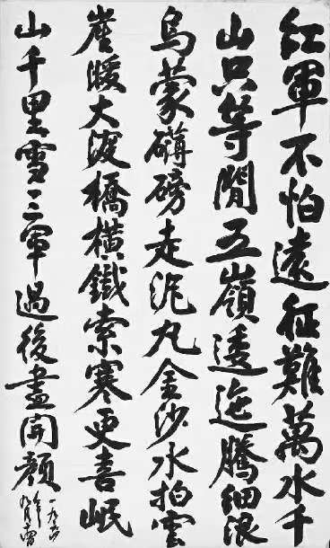
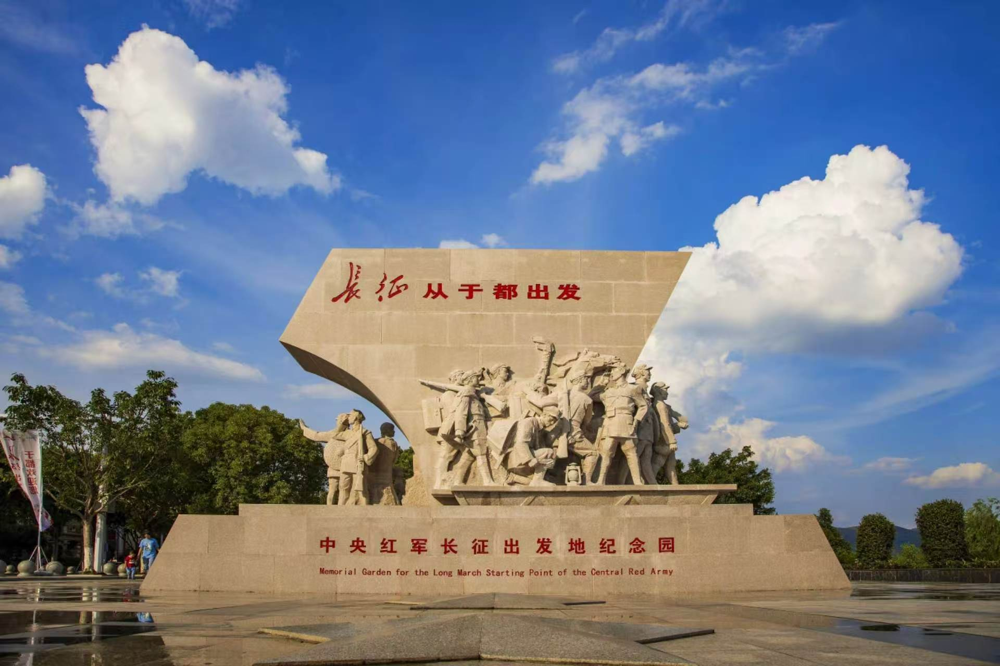
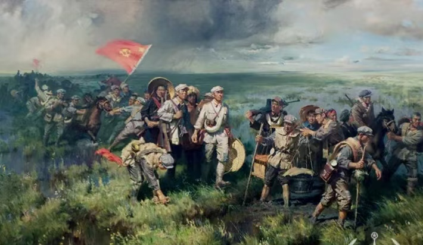
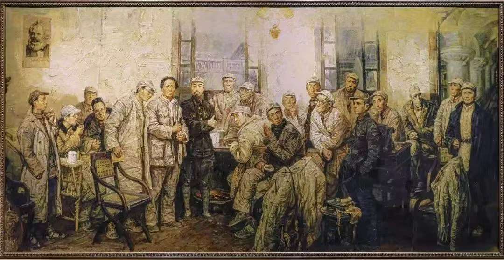
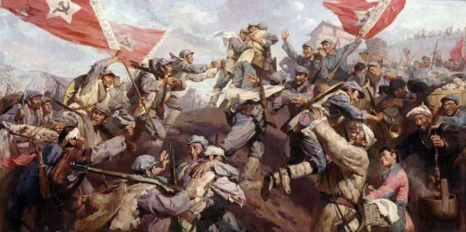

纪念中国工农红军长征胜利九十周年
“红军不怕远征难，万水千山只等闲。”
从1934到1936，二万五千里山河，写下一部信念、牺牲与胜利的史诗。
背景图：北京市文物局「铭记红色历史·延续长征精神」专题页面

CHAPTER 01
从于都河畔的夜渡，到会宁城下的会师，两年零九天的行军，被时间刻成一条向上的曲线。
背景图：上海歌剧院《长征组歌——红军不怕远征难》演出海报
CHAPTER 02
20世纪30年代，中华民族内忧外患。由于“左”倾教条主义错误领导，中央革命根据地第五次反“围剿”失败。1934年10月至1936年10月，中国共产党领导红军第一、第二、第四方面军和第二十五军，纵横十余省，长驱二万五千里，胜利实现北上抗日的战略转移。

1934年10月，中央红军主力从江西瑞金、于都等地出发，开始战略转移。

跨越近百条江河，翻越皑皑雪山，穿越茫茫草地，进行600余次战役战斗。

遵义会议确立毛泽东同志的领导地位，党和红军在最危急关头获得新的生命。

1936年10月，三大主力红军胜利会师，宣告国民党消灭红军的图谋彻底失败。
图：于都出发实景（携程）；油画《红军过草地》《1935·遵义会议》《三大主力会师》。背景图：长征胜利纪念日主题背景（美篇转载）。
CHAPTER 03
长征不仅是一次军事战略转移，更是一部理想信念的伟大远征。它宣告了国民党反动派消灭中国共产党和红军的图谋彻底失败，成功开创了中国革命新局面。
它向全世界宣告，中国共产党和红军具有不可战胜的顽强意志和强大力量。
红军沿途宣传抗日救国主张，播撒革命火种，让人民群众看见公平与希望。
红军走到哪里，就在哪里发动群众、建立政权，留下革命干部和群众基础。
坚定理想信念、不怕艰难险阻、实事求是、团结群众、艰苦奋斗，这些精神至今仍然激励着我们走好新时代的长征路。
背景图：水墨风长征群像（小红书博主「时尚海绵」AI 生成，非商用学习参考）